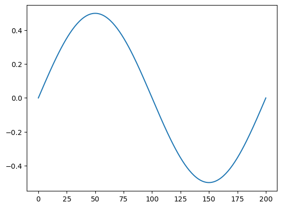
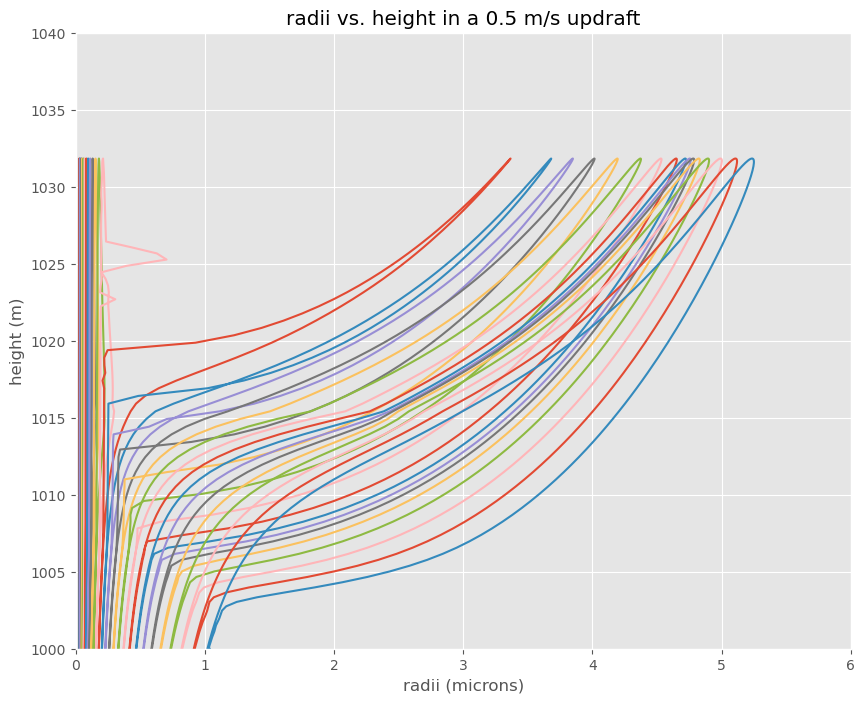
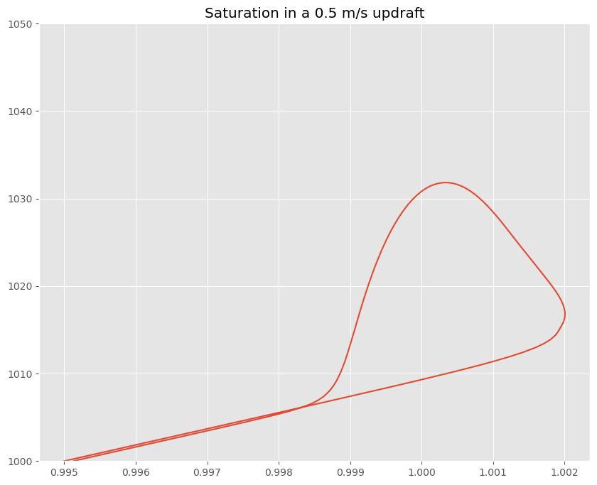

Worksheet11 Solution: Parcel model with oscillating updraft#
Download link: worksheet11_dropgrow_solution.ipynb
Replace the constant updraft with an oscillating updraft that cycles between -0.5 and 0.5 m/s over a period of 200 seconds. Is droplet grow/evaporation a reversible process?
Hints:
you first need to find \(\theta_e\) and \(r_v\) at cloudbase (these will be the same as the surface values)
then you need to find \(r_l\) at every timestep using apply
useful functions: find_thetaet and tinvert_thetae
from pathlib import Path
import numpy as np
from a405.dropgrow.aerolib import lognormal,create_koehler
from a405.utils.helper_funs import make_tuple, find_centers
from a405.thermo.thermlib import find_esat, find_rsat, find_thetaet, tinvert_thetae, find_Td
from a405.thermo.rootfinder import find_interval, fzero
from a405.dropgrow.drop_grow import find_diff
from a405.thermo.constants import constants as c
from scipy.integrate import odeint
import pandas as pd
from matplotlib import pyplot as plt
Answer#
Write the updraft function#
def find_wvel(the_time):
period = 2*np.pi/200.
wvel = 0.5*np.sin(the_time*period)
return wvel
times = np.linspace(0,200,200)
wvel_out = [find_wvel(the_time) for the_time in times]
plt.plot(times,wvel_out);

Library functions from the week 10 koehler worksheet#
Move functions from - Assignment 6 paper/pencil problems into the a405 libraries
a405.utils.helper_funs.make_tuple
a405.utils.helper_funs.find_centers
a405.dropgrow.aerolib.lognormal
a405.dropgrow.aerolib.create_koehler
a405.dropgrow.drop_grow.find_diff
new functions for droplet growth#
Calculate the liquid water content, supersaturation and the derivatives for the drop sizes
def rlcalc(var_vec,cloud_tup):
"""
calculate the liquid water for the distribution
the last 3 variables in var_vec are temperature, pressure and height (mks)
Parameters
----------
var_vec: vector(float)
vector of values to be integrated
cloud_top: namedtuple
tuple of necessary coefficients
"""
wl=cloud_tup.ndist*(var_vec[:-3]**3.)
wl=np.sum(wl)
wl=wl*4./3.*np.pi*c.rhol
return wl
def Scalc(var_vec,cloud_tup):
"""
calculate the environmental saturation using conservation
of total water mixing ratio cloud_top.rt and the current
value of the liquid water mixing ratio rl
That is diagnosing the vapor mixing ratio as the difference
between the total water in the parcel and the liquid water
in the droplets
the last 3 variables in var_vec are temperature, pressure and height (mks)
Parameters
----------
var_vec: vector(float)
vector of values to be integrated
cloud_top: namedtuple
tuple of necessary coefficients
Returns
-------
Sout: float
environmental saturation
"""
temp,press,height = var_vec[-3:]
rl=rlcalc(var_vec,cloud_tup)
rv=cloud_tup.rt - rl
e=rv*press/(c.eps + rv)
Sout=e/find_esat(temp)
return Sout
def rlderiv(var_vec,deriv_vec,cloud_tup,nvars=3):
"""
calculate the time derivative of the liquid water content
using drop_grow.pdf eqn 21b
the last 3 variables in var_vec are temperature, pressure and height (mks)
Parameters
----------
var_vec: vector(float)
vector of values to be integrated
deriv_vec: vector(float)
derivatives of each of var_vec members
cloud_tup: namedtuple
tuple of input coefficients
nvars: int
number of bulk thermodynamic variables (i.e. number of variables
that are not droplet radii)
Returns
-------
drldt: float
rate of change of rl
"""
#
# the slice [:-nvars] gives only the droplet radii
#
rlderiv=(var_vec[:-nvars])**2.
rlderiv=cloud_tup.ndist*rlderiv
rlderiv=rlderiv*deriv_vec[:-nvars]
drldt = np.sum(rlderiv)*4.*np.pi*c.rhol
return drldt
Answer: add find_wvel to find_derivs#
Replace the constant updraft#
def find_derivs(var_vec,the_time,cloud_tup):
"""
calcuate derivatives of var_vec
Parameters
----------
var_vec: vector(float)
vector of values to be integrated
the_time: float
timestep
cloud_tup: namedtuple
tuple of necessary coefficients
Returns
-------
deriv_vec: vector(float)
derivatives of each of var_vec
"""
#
# change the updraft to use find_wvel
#
def find_wvel(the_time):
period = 2*np.pi/200.
wvel = 0.5*np.sin(the_time*period)
return wvel
the_wvel = find_wvel(the_time)
#print('inside: ',var_vec)
#print(f"{the_time=}")
temp,press,height = var_vec[-3:]
numrads = len(var_vec) - 3
dry_radius = cloud_tup.dry_radius
rho=press/(c.Rd*temp)
#
# find the evironmental S by water balance
#
S=Scalc(var_vec,cloud_tup)
deriv_vec=np.zeros_like(var_vec)
#dropgrow notes equation 18
for i in range(numrads):
m=cloud_tup.masses[i]
if var_vec[i] < dry_radius[i]:
var_vec[i] = dry_radius[i]
Seq=cloud_tup.koehler_fun(var_vec[i],m)
rhovr=(Seq*find_esat(temp))/(c.Rv*temp)
rhovinf=S*find_esat(temp)/(c.Rv*temp)
#day 25 drop_grow.pdf eqn. 18
deriv_vec[i]=(c.D/(var_vec[i]*c.rhol))*(rhovinf - rhovr)
#
# moist adiabat
#
deriv_vec[-3]=find_lv(temp)/c.cpd*rlderiv(var_vec,deriv_vec,cloud_tup) - c.g0/c.cpd*the_wvel
#
# hydrostatic balance dp/dt = -rho g dz/dt
#
deriv_vec[-2]= -1.*rho*c.g0*the_wvel
#
# how far up have we traveled?
#
deriv_vec[-1] = the_wvel
return deriv_vec
Get the aerosol and initial conditions#
aerosol_specs = {
"Ms": 114, #molecular weight of aerosol
"Mw": 18.0, #molecular weight of water
"Sigma": 0.075, # surface tension N/m^2
"vanHoff": 2.0,
"rhoaero": 1778, #aerosol density, kg/m^3
"themean": 2e-17, #mean mass kg
"sd": 1.7, #standard deviation (kg)
"totmass": 1.5e-09 #kg/m^3
}
initial_conditions = {
"Tinit": 280.0, #K
"Zinit": 1000.0, #m
"Pinit": 90000.0, #Pa
"Sinit": 0.995,
"wvel": 0.5 #m/s
}
integration = {
"tstart": 0,
"tend": 200,
"dt": 1
}
aero=make_tuple(aerosol_specs)
parcel=make_tuple(initial_conditions)
integration = make_tuple(integration)
koehler_fun = create_koehler(aero,parcel)
initialize the lognormal mass and number distributions for 30 bins#
#
#set the edges of the mass bins
#31 edges means we have 30 droplet bins
#
numrads = 30
mass_vals = np.linspace(-20,-16,numrads+1)
mass_vals = 10**mass_vals #aerosol mass in kg
mu=aero.themean
sigma = aero.sd
totmass = aero.totmass
mdist = totmass*lognormal(mass_vals,np.log(mu),np.log(sigma))
mdist = find_centers(mdist)*np.diff(mass_vals) #kg/m^3 of aerosol in each binlou
center_mass = find_centers(mass_vals)
ndist = mdist/center_mass #number/m^3 of aerosol in each bin
#save these in an ordered dictionary to pass to functions
cloud_vars = dict()
cloud_vars['mdist'] = mdist
cloud_vars['ndist'] = ndist
cloud_vars['center_mass'] = center_mass
cloud_vars['koehler_fun'] = koehler_fun
def find_lv(temp):
"""
Calculates the temperature dependent
enthalpy of evaporation
Parameters
----------
temp : float or array_like
Temperature of parcel (K).
Returns
-------
lv : float or list
entalpy of evaporation
Examples
--------
>>> find_lv(293.)
2547052.0
References
----------
Day 13 moist static energy notes
"""
lv = c.lv0 - (c.cpv - c.cl) * (temp - c.Tc)
return lv
find the equilibrium radius for each bin at saturation Sinit#
S_target = parcel.Sinit
logr_start = np.log(0.1e-6)
initial_radius = []
dry_radius = []
for mass in center_mass:
brackets = np.array(find_interval(find_diff,logr_start,S_target,mass,koehler_fun))
left_bracket, right_bracket = np.exp(brackets)*1.e6 #get brackets in microns for printing
equil_rad = np.exp(fzero(find_diff,brackets,S_target,mass,koehler_fun))
initial_radius.append(equil_rad)
dry_rad = (mass/(4./3.*np.pi*aero.rhoaero))**(1./3.)
dry_radius.append(dry_rad)
print('mass = {mass:6.3g} kg'.format_map(locals()))
print('equlibrium radius at S={} is {:5.3f} microns\n'.format(S_target,equil_rad*1.e6))
mass = 1.18e-20 kg
equlibrium radius at S=0.995 is 0.026 microns
mass = 1.6e-20 kg
equlibrium radius at S=0.995 is 0.030 microns
mass = 2.18e-20 kg
equlibrium radius at S=0.995 is 0.035 microns
mass = 2.96e-20 kg
equlibrium radius at S=0.995 is 0.040 microns
mass = 4.03e-20 kg
equlibrium radius at S=0.995 is 0.046 microns
mass = 5.48e-20 kg
equlibrium radius at S=0.995 is 0.053 microns
mass = 7.44e-20 kg
equlibrium radius at S=0.995 is 0.061 microns
mass = 1.01e-19 kg
equlibrium radius at S=0.995 is 0.071 microns
mass = 1.38e-19 kg
equlibrium radius at S=0.995 is 0.081 microns
mass = 1.87e-19 kg
equlibrium radius at S=0.995 is 0.093 microns
mass = 2.54e-19 kg
equlibrium radius at S=0.995 is 0.106 microns
mass = 3.45e-19 kg
equlibrium radius at S=0.995 is 0.121 microns
mass = 4.7e-19 kg
equlibrium radius at S=0.995 is 0.138 microns
mass = 6.38e-19 kg
equlibrium radius at S=0.995 is 0.157 microns
mass = 8.68e-19 kg
equlibrium radius at S=0.995 is 0.178 microns
mass = 1.18e-18 kg
equlibrium radius at S=0.995 is 0.202 microns
mass = 1.6e-18 kg
equlibrium radius at S=0.995 is 0.228 microns
mass = 2.18e-18 kg
equlibrium radius at S=0.995 is 0.258 microns
mass = 2.96e-18 kg
equlibrium radius at S=0.995 is 0.291 microns
mass = 4.03e-18 kg
equlibrium radius at S=0.995 is 0.328 microns
mass = 5.48e-18 kg
equlibrium radius at S=0.995 is 0.369 microns
mass = 7.44e-18 kg
equlibrium radius at S=0.995 is 0.415 microns
mass = 1.01e-17 kg
equlibrium radius at S=0.995 is 0.466 microns
mass = 1.38e-17 kg
equlibrium radius at S=0.995 is 0.523 microns
mass = 1.87e-17 kg
equlibrium radius at S=0.995 is 0.586 microns
mass = 2.54e-17 kg
equlibrium radius at S=0.995 is 0.655 microns
mass = 3.45e-17 kg
equlibrium radius at S=0.995 is 0.733 microns
mass = 4.7e-17 kg
equlibrium radius at S=0.995 is 0.819 microns
mass = 6.38e-17 kg
equlibrium radius at S=0.995 is 0.914 microns
mass = 8.68e-17 kg
equlibrium radius at S=0.995 is 1.020 microns
now add the intial conditions to the cloud_vars dictionary and make it a namedtuple#
the vector var_vec holds 30 droplet radii plus three extra variables at the end of the vector: the temperature, pressure and height.
cloud_vars['initial_radiius'] = initial_radius
cloud_vars['dry_radius'] = dry_radius
cloud_vars['masses'] = center_mass
numrads = len(initial_radius)
var_vec = np.empty(numrads + 3)
for i in range(numrads):
var_vec[i] = initial_radius[i]
#
# temp, press and height go at the end of the vector
#
var_vec[-3] = parcel.Tinit
var_vec[-2] = parcel.Pinit
var_vec[-1] = parcel.Zinit
cloud_tup = make_tuple(cloud_vars)
#calculate the total water (kg/kg)
wl=rlcalc(var_vec,cloud_tup);
e=parcel.Sinit*find_esat(parcel.Tinit);
wv=c.eps*e/(parcel.Pinit - e)
#save total water
cloud_vars['rt'] = wv + wl
cloud_vars['wvel'] = parcel.wvel
#
# pass this to the find_derivs function
#
cloud_tup= make_tuple(cloud_vars)
use odeint to integrate the variable in var_vec from tinit to tfin with outputs every dt seconds#
var_out = []
time_out =[]
tinit=0
dt = integration.dt
tfin = integration.tend
t = np.arange(tinit,tfin,dt)
sol = odeint(find_derivs,var_vec, t, args=(cloud_tup,))
create a dataframe with 33 columns to hold the data#
colnames = ["r{}".format(item) for item in range(30)]
colnames.extend(['temp','press','z'])
df_output = pd.DataFrame.from_records(sol,columns = colnames)
plt.style.use('ggplot')
plt.close('all')
fig, ax = plt.subplots(1,1,figsize=[10,8])
for i in colnames[:-3]:
ax.plot(df_output[i]*1.e6,df_output['z'],label=i)
out=ax.set(ylim=[1000,1040],xlim=[0,6],
xlabel='radii (microns)',ylabel='height (m)',
title='radii vs. height in a {} m/s updraft'.format(cloud_tup.wvel))

Plot the parcel supersaturation#
Svals = []
for index,row in df_output.iterrows():
out_vec = row.values
Svals.append(Scalc(out_vec,cloud_tup))
fig,ax = plt.subplots(1,1,figsize=[10,8])
ax.plot(Svals,df_output['z'])
out=ax.set(ylim=[1000,1050],title='Saturation in a {} m/s updraft'.format(cloud_tup.wvel))

Worksheet Problem 1: oscilating updraft#
Replace the constant updraft with an oscillating updraft that cycles between -0.5 and 0.5 m/s over a period of 200 seconds. Is droplet grow/evaporation a reversible process?